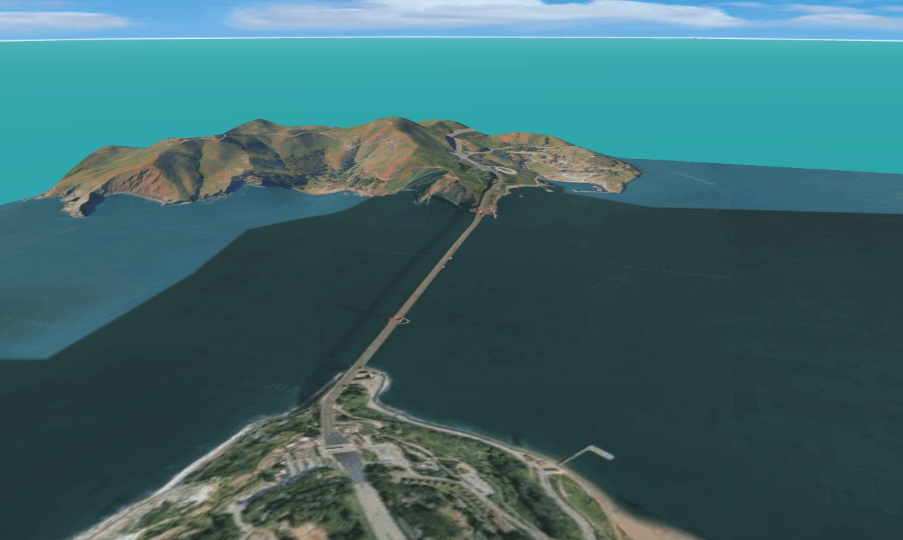
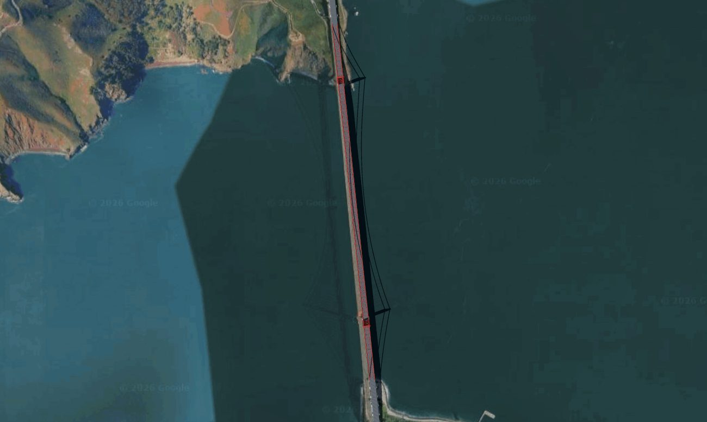

Building bridges with AI
Ask the AI Assistant for a famous bridge in one sentence — or build it with the assistant one engineering decision at a time, on the real site
Bridges are some of the best things to learn engineering from. You can see how they work: the deck hangs from the cables, the cables press down on the towers and pull on the anchorages, and all of it ends in rock. Every famous bridge also answers a hard question its site asked. Take the Golden Gate. It had to cross a strait more than a hundred metres deep, through fog and strong winds, in the 1930s. Its shape is the answer to that.
Don’t just load the bridge. Reason your way to it.
Site, form, dimensions, alignment, details — one decision per turn, each one checked against the real place.
In Aladdin, a bridge is not a picture of a bridge. It is a parametric structure — girder, truss, arch, cable‑stayed or suspension — that a structural engine can load, shake and push until it fails. This article shows how to build one by talking to the AI Assistant. It uses the Golden Gate Bridge as the example, but the same two approaches work for any bridge Aladdin can build.
There are two ways to ask, and they teach different things. One takes a sentence and gives you a finished bridge. The other takes five turns, and you watch the engineering happen.
Two ways to ask for the same bridge
In one sentence. Type “Build the Golden Gate Bridge” and the assistant looks up the Golden Gate model that ships with Aladdin. It places that exact design at the real location: the latitude and longitude, the satellite map, the ground terrain, the bearing across the strait and the opening view. It takes about half a dozen tool calls and well under a minute. This is the fastest way to get a bridge you can study — but the assistant is copying a design, and it says so.
Step by step. Add “step by step, from scratch” and the assistant changes how it works. It is told not to look at the shipped model at all. It has to work the bridge out the way an engineer would, from what it knows about the real one and from what the scene tells it, one stage per turn. It explains each decision and waits for you before going on.
Both results are below. Click a card to load it in the viewer:
The rest of this article follows the step-by-step session turn by turn. In short, it went like this (the assistant’s replies are shortened; the full text is in the file):
- YouLet’s build the Golden Gate Bridge step by step, from scratch, one stage per turn. Don’t just load the example.
- AssistantStage 1 — the site. The scene is at the Golden Gate strait, 37.82° N, 122.48° W, with the satellite map on and the real ground relief under it: 268 m of it across a 4.8 km square. Nothing is built yet. Go on to the structural form?
- YouGood. Next stage.
- AssistantStage 2 — the form. A two‑tower suspension bridge with vertical hangers, earth anchorages and a deep stiffening truss. The span decides it: no arch or cantilever of the 1930s came near 1,280 m. The deep channel rules out piers in the middle, and the rock on both shores can hold the cables.
- YouNext.
- AssistantStage 3 — the dimensions. The bridge is up: a 1,280 m main span, a 27.4 m deck 67 m above the water, towers 227 m above the water. My first try gave a 1,825 m main span, so I resized the deck until the main span measured 1,280.
- YouNext.
- AssistantStage 4 — alignment. From the top view, the real bridge runs about 6° west of north, and mine ran 20° east of north. I rotated the deck onto the real crossing and checked it again.
- YouNext.
- AssistantStage 5 — details. Bigger tower piers, thicker main cables and hangers, approach viaducts to 2,736 m end to end, International Orange. Here is what this model still can’t show, and here are the analyses you can run on it.
Stage 1: Start with the site
A bridge belongs to a place, so the assistant starts there. It sets the scene’s location to the strait, turns on the satellite map, and fetches the real ground relief for a 4.8 km square: the Marin Headlands rising steeply to the north and the Presidio bluffs to the south. It chose that size on purpose. The bridge is about 2.7 km long, so a frame nearly twice that wide leaves shore on both sides to land the approaches on.

Nothing is built yet, and that is the point. Almost everything that follows — how tall the towers are, where the approaches land, which way the bridge points — comes from this ground.
Stage 2: Choose the form before drawing anything
The second turn has no geometry in it at all. The assistant explains which kind of bridge the Golden Gate is, and why it could not have been any other kind:
- The span. The main span is 1,280 m. No arch or cantilever of the time came close: the record cantilever, the Quebec Bridge, spans 549 m.
- The water. The channel is deep and the tides run fast, so there can be no support in the middle. The two towers stand near the shores.
- The ground. Hard rock on both shores can hold the cable ends and carry the towers, which bring almost all of the bridge’s weight down into the ground.
- The wind. A long, light deck in a windy strait twists, so it needs a deep stiffening truss under the roadway.
That is a suspension bridge with vertical hangers, earth anchorages and a stiffening truss — and you agreed to it before a single deck plate existed. This is the stage that makes step by step worth doing. Ask “why not an arch?” here and you get an answer about thrust and abutments, not a drawing.
Stage 3: The main dimensions
Now the bridge goes up, built mostly from the real bridge’s published figures:
| Dimension | Real bridge | AI’s model |
|---|---|---|
| Main span | 1,280 m | 1,280 m |
| Side spans | 343 m each | 320 m each |
| Overall length | 2,737 m | 2,736 m (after stage 5) |
| Deck width | 27.4 m | 27.4 m |
| Deck above the water | 67 m | 67 m |
| Towers above the water | 227 m | 227 m |
| Stiffening truss depth | 7.6 m | 7.6 m |
The most useful moment in the session came here. The assistant first set the suspended structure to 2,737 m, the bridge’s full length. Aladdin reported back the main span this produced: 1,825 m, 43% too long. In Aladdin the suspended structure is only the main span and its two side spans, and the main span takes two‑thirds of it. So it worked backwards: a 1,920 m structure gives a 1,280 m main span. Then it added short approach viaducts at each end to carry the road onto the shore; it brought them up to the full length in stage 5.
The assistant did not get it right the first time. It got it right because it read the model back after building it, compared the result with the real number and fixed the difference. That is how you should check an AI’s work, too.
Stage 4: Line it up with the real crossing
The bridge from stage 3 had the right span and the wrong heading: it crossed the strait about 26° off. On a suspended structure nearly 2 km long, that puts the ends hundreds of metres away from the real ones. So the assistant took a top‑down view, found the real bridge in the satellite photo and measured its direction from the picture: about 6° west of north. Then it rotated its own deck to match and looked again.


The result is close, but look carefully and it is not perfect. The assistant said its deck now lies right on top of the real one. In the top view it actually runs alongside, a few tens of metres to the east. That is a fair thing to push back on: “Move it onto the real bridge” is one more turn. It also shows why you should look at the scene yourself instead of trusting a description of it.
Stage 5: The details, then the finished bridge
The last stage cleans up what the earlier stages left rough. The tower piers grew from 9 m to 15 m, so the towers no longer look planted on posts. (The assistant asked for 18 m and its reply still says 18, but 15 m is the largest pier Aladdin builds — one more reason to check the model rather than the description of it.) The main cables were thickened until they read as cables rather than hairlines. The approach viaducts were lengthened to bring the overall length within a metre of the real 2,737 m. The towers, cables and truss stayed International Orange — a color chosen because it shows up in fog. Then the assistant framed the finished bridge.

It also listed, without being asked, what the model cannot show. The real towers step inward in Art Deco stages; these are plain two‑legged frames. The stiffening truss has the right depth, but its triangular bracing is not drawn. The side spans are 320 m instead of 343 m. And the famous concrete fender around the south tower is missing. An assistant that tells you where its model stops is one you can learn from.
Then ask the engineering questions
Up to here this could have been a nice 3D picture. It isn’t one, because Aladdin’s bridges are structural models: the deck, cables, hangers and towers are members with real sections and real steel. So in the same chat window you can ask:
-
How much does the deck sag under traffic?
A static analysis loads the deck with its own weight and traffic, and reports how far it deflects and how hard each member is working compared with what it can carry.
-
What are its natural frequencies?
A modal analysis finds the shapes the bridge likes to vibrate in — vertical bending, swaying, twisting — and how fast. Twisting is what destroyed the Tacoma Narrows Bridge in 1940.
-
What does a strong wind do to it?
A wind analysis looks at how far the deck is pushed sideways, and at flutter: the wind speed at which a long, light deck starts to twist on its own. For a span this long, wind is the governing danger.
-
Could it survive a big earthquake?
A seismic analysis gives a quick verdict from a design response spectrum, or runs a recorded earthquake through the structure step by step while you watch the bridge shake.
-
How much load would it take to break it?
A pushover analysis keeps increasing the load until members yield and the structure collapses, which tells you its real safety margin.
-
Can you make it cheaper without making it unsafe?
An optimizer evolves the sizes of the deck, piers and towers to cut the cost of steel, cable and concrete, while the strength, seismic and deflection checks still pass. It starts from your design, so its answer is never worse, and you can watch the bridge slim down as it works.
Because you built the bridge yourself, you can change one thing and run the analysis again. Make the truss shallower and watch the deck move more. Add a third tower and see what happens to the cable. The bridge you reasoned your way to becomes the experiment.
Tips for building your own bridge with the AI
- Say how you want to build it. “Step by step” or “from scratch” gets you the stage‑by‑stage build. Just the name gets you the shipped model.
- Argue with a stage before moving on. “Why not cable‑stayed?” or “Make the towers shorter” are good answers to “go on?”. Your numbers win over the assistant’s, within what Aladdin can build.
- Check the top view yourself. The satellite photo is the answer key for alignment. If the bridge is off, say which way.
- Ask how close it came. When you are done, ask the assistant to compare its design with the shipped model. It is told to look the model up only when you ask.
Try the other bridges
The Golden Gate is one of seven real bridges that ship with Aladdin, and each of the other six can be built either way, too:
- Huajiang Grand Canyon Bridge, China: a suspension bridge with the world’s highest deck, more than 600 m above the river in the canyon below.
- Forth Bridge, Scotland: an 1890 cantilever truss, where the huge towers are the structure.
- Sydney Harbour Bridge, Australia: a single 503 m steel arch with the deck hung through it.
- Millau Viaduct, France: a cable‑stayed bridge on seven tall piers across the Tarn valley.
- Europabrücke, Austria: a 1963 girder bridge whose deck climbs as it crosses the valley.
- Südbrücke, Mainz, Germany: a K‑truss railway bridge, four spans set low over the Rhine.
You can try any bridge you like, too. The assistant will tell you honestly when something cannot be built here — a bridge that opens, like Tower Bridge, or one with a curved deck — instead of quietly building something else.
Conclusion
There is a real difference between asking for an answer and working one out. Ask Aladdin for the Golden Gate and you get it, exactly, in under a minute. That is useful when you want a bridge to study. Build it step by step and you get something better: the reasons. You see why it hangs from cables, why the towers stand where they do, and why it is that particular orange. You even see the assistant get the span wrong, read the model back and fix it.
And at the end you have a real structure on its real site, ready to be loaded, shaken and pushed until it breaks.
Related reading: Five ways to cross a river · The bridge that bends · Designing your dream home with AI
← Back to Aladdin